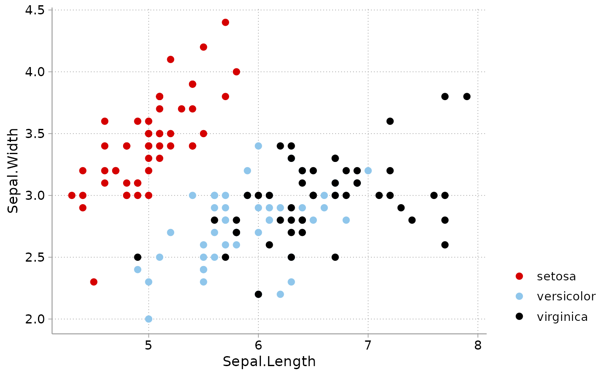

One call makes ggplot2 behave like the Stata cleanplots scheme for the
rest of the session: sets theme_cleanplots() as the default theme,
makes points, markers, and lines larger and thicker (matching the
scheme's more visible defaults), and registers the cleanplots color and
fill scales as the session defaults so plots are colored correctly
without adding scales by hand.
Usage
cleanplots_defaults(
base_size = 13,
point_size = 2,
point_stroke = 0.7,
line_width = 0.75,
smooth_color = "#D50000"
)Arguments
- base_size
Base font size in points passed to
theme_cleanplots()(default:13).- point_size
Default size for
geom_point()markers (default:2; ggplot2's own default is 1.5).- point_stroke
Default outline thickness for markers, which controls how visible the hollow shapes are (default:
0.7; ggplot2's own default is 0.5).- line_width
Default line width for
geom_line(),geom_path(),geom_step(), andgeom_smooth()(default:0.75; ggplot2's own default is 0.5). Error bars, line ranges, and point ranges are set to 80% of this value.- smooth_color
Default line color for
geom_smooth()(default: cleanplots red,"#D50000").
Details
After calling cleanplots_defaults():
All plots use
theme_cleanplots()unless another theme is added.geom_point()draws larger markers with a heavier outline (important for the hollow marker shapes).geom_line()and friends draw thicker lines so colors are visible.geom_smooth()fit lines default to cleanplots red with a light gray confidence band (instead of ggplot2's blue).Discrete
coloraesthetics default to the main cleanplots palette, and discretefillaesthetics default to the softer bar palette (as in Stata, where bars and areas automatically use the softer colors). Add a scale explicitly to override, e.g.scale_fill_cleanplots(palette = "default").
These are session-wide settings that affect all subsequent ggplot2
plots. To undo them, restart R or call ggplot2::theme_set(ggplot2::theme_gray()),
ggplot2::update_geom_defaults(), and options(ggplot2.discrete.colour = NULL, ggplot2.discrete.fill = NULL).
Examples
library(ggplot2)
cleanplots_defaults()
# No scales or theme needed -- everything is applied by default
ggplot(iris, aes(Sepal.Length, Sepal.Width, color = Species)) +
geom_point()
